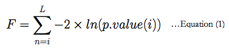

Gene Set Statistics:
[a] Given a list of L contigs, GeneSetStatistics.jar combines the p.values from differential expression analysis (reported by tools like DESeq2 and EdgeR) using the Fisher combined probability (FCP) method (Equation 1). The cumulative distribution function of the FCP value follows a Chi-Square distribution with 2L degrees of freedom. A chi-square test for the FCP statistic for 2L degrees of freedom gives the combined p-value for the contig-set.
There is also an option for estimating permutation statistics instead of the fisher transformation. We use the Gene Set Enrichment (GSA) method proposed by Bradley Efron and Rob Tibshirani for the permutation test. The max. mean statistic is used as the test statistic.